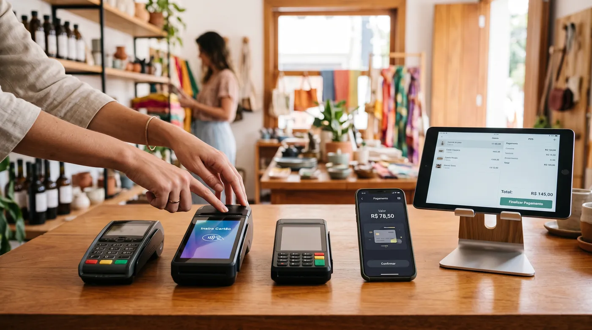

Stone, PagBank ou Mercado Pago: qual maquininha (e qual sistema de caixa) escolher em 2026?
Quase todo comerciante brasileiro já testou uma maquininha da Stone, do PagBank ou do Mercado Pago, e é bem provável que você tenha uma delas na gaveta agora. O problema é que a decisão raramente para na taxa do cartão: essas três empresas também empurram o próprio aplicativo de caixa, e usar esse aplicativo pode significar ficar preso àquela maquininha específica. Este guia separa as duas coisas: o que cada uma cobra de verdade para processar pagamento, e o que você ganha (ou perde) ao deixar o PDV do seu negócio amarrado a uma adquirente só.

Ferramenta rápida: use a nossa calculadora de custo do PDV para ver o seu custo real em 12 meses, taxas incluídas, em 30 segundos.
O que Stone, PagBank e Mercado Pago vendem de verdade
As três são, antes de tudo, adquirentes: empresas que processam o pagamento no cartão e depositam o dinheiro na sua conta. A Stone nasceu focada em maquininhas para pequenas e médias empresas e hoje também tem conta digital e crédito. O PagBank (antigo PagSeguro) cresceu como banco digital com maquininhas próprias, a linha Moderninha. O Mercado Pago é o braço financeiro do Mercado Livre e vende a linha Point, incluindo o Point Tap, que transforma o próprio celular em maquininha sem comprar aparelho.
Nos últimos anos, as três passaram a empurrar também um aplicativo de frente de caixa instalado direto na maquininha ou no celular: PagVendas no PagBank, apps de gestão no ecossistema Stone e a própria tela do Point Smart no Mercado Pago. É aí que a linha entre "processar pagamento" e "ser o seu sistema de caixa" fica embaçada, e é o ponto central deste guia.
Taxas: o que os comparadores independentes mostram
Nenhuma das três publica uma taxa única e definitiva, o valor final depende do seu faturamento e de quanto tempo você aceita esperar para receber. Ainda assim, dá para comparar a faixa de entrada de cada uma.
Stone
A Stone anuncia "taxas personalizadas" e trabalha com planos como Modo à Vista, Modo Parcelado e Modo Flex. Comparadores independentes citam taxas padrão em torno de 1,25% no débito e 3,11% no crédito à vista, com cobrança de aluguel mensal da maquininha que pode ser isenta para negócios que atingem um faturamento mínimo (fontes independentes mencionam algo próximo de R$ 15 mil por mês para essa isenção, mas confirme o valor vigente com a Stone).
PagBank
O PagBank costuma se destacar pela taxa de entrada mais baixa entre as três: comparadores independentes e o próprio site do PagBank citam taxas a partir de 0,58% no débito e no crédito à vista, Pix sem custo em todos os planos, e sem aluguel, mensalidade ou taxa de adesão na maquininha. O aplicativo PagVendas vem pré-instalado nos modelos Smart, com controle de estoque básico, cadastro de clientes e registro de fiado.
Mercado Pago
O Mercado Pago trabalha com taxas progressivas: quanto mais você vende, menor a taxa. Fontes independentes apontam débito a partir de 1,99% para quem fatura até R$ 3 mil por mês, caindo para 1,61% acima de R$ 10 mil, e crédito à vista entre 4,98% e 3,85% na mesma lógica. O Point Tap, que usa o próprio celular como maquininha, não tem custo de equipamento, você só paga a taxa por venda.
Na prática: se o seu ticket médio é baixo e você recebe no débito ou no Pix, o PagBank costuma sair na frente na taxa de entrada. Se você fatura alto e consegue negociar, a Stone pode empatar ou ganhar. E se você está começando e não quer comprar equipamento, o Point Tap do Mercado Pago tira esse custo da conta. Nenhuma comparação genérica substitui simular com os seus números reais.
A pegadinha da NFC-e na maquininha
Aqui está um detalhe que muita gente descobre tarde demais: a maquininha, por si só, não emite NFC-e. O que emite a nota é um sistema homologado junto à SEFAZ, com certificado digital e Inscrição Estadual. Nos modelos básicos das três empresas, a maquininha só processa o cartão, e você continua precisando de outro emissor para a nota fiscal.
Para emitir direto do aparelho, é preciso um modelo Android específico (Stone Smart, Point Smart 2 ou PagBank Smart, por exemplo) com um aplicativo de frente de caixa configurado com módulo fiscal, e ainda assim a homologação varia por estado. Ou seja, "ter maquininha" e "estar em dia com a NFC-e" são duas coisas diferentes, e vale confirmar isso antes de assumir que está tudo resolvido.
Comparativo: as três adquirentes e uma alternativa de PDV
Como Stone, PagBank e Mercado Pago competem principalmente na taxa de pagamento, colocamos aqui o digabloPos como referência de outro tipo de escolha: um sistema de caixa independente, que não é adquirente, e que funciona com a maquininha que você preferir.
digabloPos
O digabloPos é um PDV em nuvem separado de qualquer maquininha: você escolhe livremente a Stone, o PagBank, o Mercado Pago ou qualquer outra adquirente, negocia a taxa que quiser, e mantém o mesmo sistema de caixa se trocar de fornecedor de pagamento amanhã. O plano base é gratuito para sempre, sem cartão de crédito, com modo offline e sincronização automática, controle de fiado (crédito de clientes), multimoeda e módulos opcionais que você ativa só quando precisar. Já vem pronto para a nota fiscal eletrônica.
👍 Pontos fortes
- Não amarra você a uma maquininha específica
- Plano grátis para sempre, sem compromisso
- Modo offline com sincronização automática
- Controle de fiado e histórico de clientes
- Módulos opcionais sob demanda
👎 A verificar
- Não processa pagamento sozinho, você ainda escolhe uma adquirente à parte
- Marca mais nova que Stone, PagBank e Mercado Pago no Brasil
- Confirme a homologação de NFC-e para o seu estado com o fornecedor
PagBank
Taxa de entrada baixa, Pix sem custo e sem mensalidade na maquininha, além do app PagVendas incluso, com estoque, clientes e fiado. O ponto de atenção é que o PagVendas foi desenhado para funcionar melhor dentro do ecossistema PagBank, então migrar de adquirente no futuro pode dar mais trabalho de reconfiguração.
Mercado Pago
Taxas progressivas que recompensam quem vende mais, e o Point Tap tira o custo do equipamento para quem está começando. É uma boa porta de entrada, mas o modelo de taxa progressiva exige atenção: simule com o seu volume real antes de comparar com um concorrente de taxa fixa.
Stone
Forte em atendimento e em negociação para quem fatura mais, com programas de isenção de mensalidade por volume. Tende a compensar mais para negócios já estabelecidos que conseguem negociar taxa, do que para quem está abrindo o primeiro caixa.
Quer um sistema de caixa que não depende da sua maquininha?
O plano base do digabloPos é grátis para sempre, fica pronto em poucos minutos e funciona com a adquirente que você escolher.
Criar meu caixa grátisTabela comparativa
| Critério | digabloPos | Stone | PagBank | Mercado Pago |
|---|---|---|---|---|
| É uma adquirente de pagamento | Não | Sim | Sim | Sim |
| Sistema de caixa grátis para sempre | Sim | Parcial (com maquininha) | Parcial (com maquininha) | Parcial (com maquininha) |
| Funciona com qualquer maquininha | Sim | Não | Não | Não |
| Modo offline + sincronização | Sim | Parcial | Parcial | Parcial |
| Controle de fiado (crédito) | Sim | Parcial | Sim (PagVendas) | Parcial |
| Emite NFC-e sem app/modelo extra | Não (à parte) | Não | Não | Não |
| Multimoeda | Sim, módulo pago | Não | Não | Não |
Comparação informativa elaborada em julho de 2026 com base em comparadores independentes e informações públicas dos fornecedores. Taxas, planos e homologação de NFC-e por estado mudam com frequência, confirme tudo nos sites oficiais e com a SEFAZ antes de decidir.
Por que ficar preso a uma maquininha custa caro depois
É tentador usar o app de caixa que já vem instalado na maquininha, é grátis, já está ali e funciona no primeiro dia. O problema aparece meses depois, quando você encontra uma taxa melhor em outra adquirente e percebe que trocar significa perder o histórico de vendas, recadastrar produtos e retreinar a equipe num sistema novo do zero.
Separar as duas decisões, quem processa o pagamento e qual sistema registra a venda, dá liberdade para negociar taxa sem reconstruir o seu negócio inteiro toda vez. Não é sobre qual maquininha é "melhor" (as três atendem bem dependendo do seu volume), é sobre não deixar essa escolha decidir o resto da sua operação por você.
A pergunta certa não é "qual maquininha tem a menor taxa hoje", é "se eu trocar de maquininha ano que vem, eu perco o meu histórico de vendas?"
Como escolher (checklist)
- Simule a taxa com o seu volume real em pelo menos duas das três adquirentes antes de decidir.
- Pergunte especificamente sobre NFC-e: qual modelo de aparelho é necessário e se a homologação já vale para o seu estado.
- Avalie se o app de caixa embutido atende hoje, ou se um PDV separado evita dor de cabeça se você trocar de maquininha depois.
- Verifique o controle de fiado e o cadastro de clientes, essencial em comércio de bairro.
- Confirme a atualização automática para os novos campos de IBS/CBS da Reforma Tributária.
- Some o custo de 12 meses (mensalidade + taxas por venda + certificado digital), não só a taxa de etiqueta.
Perguntas frequentes
Stone, PagBank ou Mercado Pago: qual tem a menor taxa?
Depende do seu volume e do prazo de recebimento. Comparadores independentes mostram o PagBank com taxas a partir de 0,58%, o Mercado Pago com taxas progressivas entre 1,61% e 1,99% no débito, e a Stone em torno de 1,25% no débito, negociável conforme o faturamento. Simule com o seu volume real antes de decidir.
A maquininha da Stone, do PagBank ou do Mercado Pago emite NFC-e sozinha?
Não por padrão. Você precisa de um modelo Android específico com aplicativo de frente de caixa configurado com módulo fiscal, além de Inscrição Estadual, certificado digital e credenciamento na SEFAZ. Confirme a homologação para o seu estado.
Vale a pena usar o PDV que vem junto com a maquininha?
Pode ser prático no começo, mas costuma prender você à maquininha daquela empresa. Trocar de adquirente depois pode significar perder o histórico de vendas e reconfigurar tudo. Um sistema de caixa independente evita essa armadilha.
O que muda com a Reforma Tributária (IBS/CBS) para quem usa maquininha?
A NF-e e a NFC-e passam a exigir novos campos ligados ao IBS e à CBS, com testes obrigatórios desde julho de 2026 e produção obrigatória a partir de agosto para o Regime Normal. Isso vale para qualquer sistema emissor, o importante é que ele receba as atualizações automaticamente.
Pronto para separar pagamento de sistema de caixa?
Monte seu caixa gratuito em poucos minutos, sem compromisso, e use a maquininha que fizer mais sentido para o seu negócio.
Começar grátisFontes oficiais
Preços e funções mudam muitas vezes. Aqui está a documentação dos fornecedores citados, para confirmar você mesmo.
- Site oficial do PagBank : o que o próprio fornecedor documenta sobre funções e preços.
- Site oficial da Stone : o que o próprio fornecedor documenta sobre funções e preços.